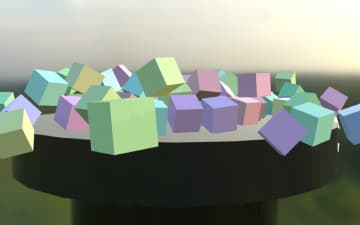
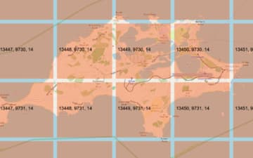

Welcome to joelmalone.com.au
I am a software engineer from Bridgetown, Western Australia.
This website contains experiments and articles about programming.
The source code for the entire website is available at github.com/joelmalone/joelmalone.github.io.
Interactive article series: Fly a spaceship in BabylonJS
In this series of articles, we're gonna fly a spaceship! Here's a preview - click or touch the screen to fly!
Read it on Medium: Fly a spaceship in BabylonJS.
Barbara the Bee spaceship mesh by Quaternius.
Medium article: Remote debugging a Java process running inside a Docker container
How to connect your IDE's debugger to a Java process running inside a Docker container.
Read it on Medium: Remote debugging a Java process running inside a Docker container.
Photo by Victoria Alexandrova.
Medium article: Math.atan2() gonna getcha
In Javascript (and many other languages), the parameters to the Math.atan2() method are in y, x order. But why?
Read it on Medium: Math.atan2() gonna getcha.
Photo by Imdadul Hussain.
Medium article: How to fix missing materials and textures when exporting a Blender file to glTF
If your glTF files exported from Blender don't have textures, you may need to use the Principled BSDF material type.
Read it on Medium: How to fix missing materials and textures when exporting a Blender file to glTF.
House models by Quaternius.
Non-interactive demo: Chladni plates
These paterns represent the vibrational intensity of a surface forced to vibrate via sound.
Paul Bourke describes the maths behind it here, or you can watch Steve Mould (🥰) demonstrate it in real-life here.

Medium article: Image-based lighting and changing skyboxes in BabylonJS
Using a background image to light the scene.
Read the accompanying article on Medium: Image-based lighting and changing skyboxes in BabylonJS.
Check out the image-based-lighting source code on Github!
Background images by
Sergej Majboroda,
Greg Zaal,
Andreas Mischok and uh
Greg Zaal again.
Medium article: Remote database queries in Postgres
Learn how to fire off SQL statements against a remote Postgres database.
Read it on Medium: Remote database queries in Postgres.
Photo by Migle Siauciulyte.
Medium article: A quick Sqlite3 and Spatialite primer
This article will give you a brief overview of working with a spatial database in Sqlite3 using the Spatialite extension.
Read it on Medium: A quick Sqlite3 and Spatialite primer.
Photo by Mika Baumeister.

Medium article: Using a Service Worker to generate diagnostic XYZ tiles
I present a quick-n-dirty “fake XYZ tile server” that you can drop into your web app to feed descriptive tiles to your map.
Read it on Medium: Using a Service Worker to generate diagnostic XYZ tiles.
Or, see it in action here.
Medium article: Handy terminal commands on a Mac
Often, I learn new terminal commands, and then promptly forget them. I need some place that I can easily copy and paste them. So this is that.
Read it on Medium: Handy terminal commands on a Mac.
Photo by Matthew Henry.
Interactive demo: Meandering cubes
I experimented with physics and shadows in a 3D scene. Fling the cubes away with your finger!
Check out the cubes source code on Github!
Interactive demo: animated player character
I experimented with loading and animating a 3D mesh.
Tap on the screen to have the character walk in that general direction.
Check out the animated-player-character source code on Github!
X Bot mesh and animations from Mixamo.
Medium article: Snowpack and GitHub Pages
You use Snowpack to build your website to be hosted on GitHub Pages, but why are your dependencies returning 404?
Read it on Medium: Snowpack and GitHub Pages.
Photo by Nikola Johnny Mirkovic.
{kind=link}
{kind=link}
{kind=link}
{kind=link}
{kind=link}
{kind=link}
{kind=link}
{kind=link}
{kind=link}
{kind=link}
{kind=link}
{kind=link}
{kind=link}